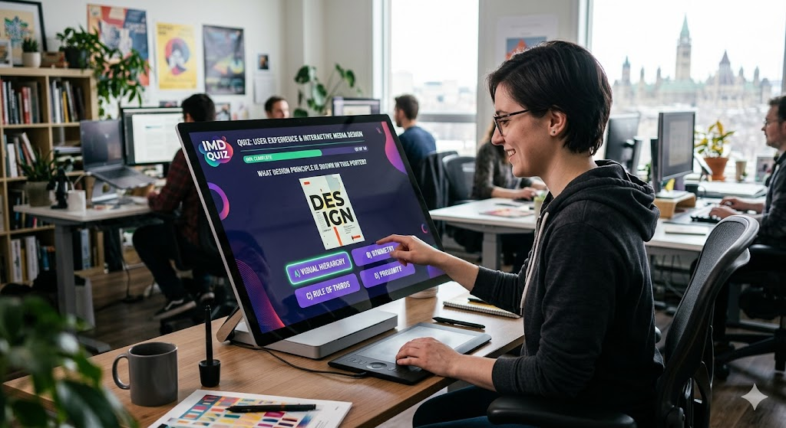

Welcome to the IMD 2026 Level 1 challenge! This is your first step towards mastering the art of problem-solving and coding. In this level, you will be presented with a series of puzzles and tasks that will test your logical thinking, creativity, and coding skills.
Someone LIKE YOU who is very smart and knows a lot about coding and puzzles, so you can trust that this challenge will be both fun and educational! and remember, the key to success in this challenge is to think outside the box and approach each puzzle with an open mind. Don't be afraid to try different solutions and learn from your mistakes. we encourage you to collaborate with others, share your ideas, and learn from each other as you progress through the challenges. creativity and persistence are your best friends in this challenge, so keep pushing forward and don't give up! Ask for help if you need it, but also try to solve the puzzles on your own to maximize your learning experience. your journey through the IMD 2026 Level 1 challenge will be filled with exciting puzzles and valuable learning opportunities, so make the most of it and enjoy the process! can yoe believe that you are about to embark on this amazing coding adventure? it's going to be a lot of fun and you'll learn so much along the way! light pink and light blue are the colors of this challenge, so get ready to immerse yourself in a world of creativity and coding!CSS, or Cascading Style Sheets, is a powerful tool that allows you to control the appearance of your web pages. With CSS, you can change colors, fonts, layouts, and much more to create visually appealing and user-friendly websites. In this challenge, you'll get a chance to experiment with CSS and see how it can enhance your coding projects.
IMD 2026 Level 1 Challenge Guide
Secondly, this challenge is designed to be fun and engaging, so don't worry about making mistakes or getting stuck. The important thing is to keep trying and learning from each experience.

week 1: Introduction to HTML and CSS
week 2: Basic JavaScript and DOM Manipulation
week 3: Advanced JavaScript and Problem-Solving Techniques
goodluck, and have fun solving the puzzles in the IMD 2026 Level 1 challenge! Remember to keep learning, stay creative, and enjoy the process. Happy coding!